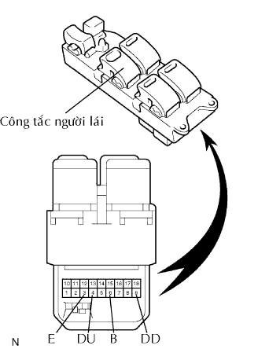

HỆ THỐNG ĐIỀU KHIỂN CỬA SỔ ĐIỆN > Cửa sổ điện của người lái không hoạt động được bằng công tắc chính |
| 1.KIỂM TRA CỤM MÔ TƠ ĐIỀU KHIỂN CỬA SỔ ĐIỆN |
 |
Tháo môtơ (Xem trang Kích chuột vào đây).
Cấp điện áp ắc quy vào các cực 1 và 2 của giắc nối.
Kiểm tra rằng bánh răng môtơ quay êm như sau.
| Điều kiện đo | Điều kiện tiêu chuẩn |
| Cực dương ắc quy (+) → Cực 1 Cực âm ắc quy (-) → Cực 2 | Bánh răng môtơ quay ngược chiều kim đồng hồ |
| Cực dương ắc quy (+) → 2 Cực âm ắc quy (-) → Cực 1 | Bánh răng môtơ quay cùng chiều kim đồng hồ |
|
| ||||
| OK | |
| 2.KIỂM TRA CÔNG TẮC CHÍNH NÂNG HẠ KÍNH CỬA SỔ ĐIỆN (CÔNG TẮC PHÍA NGƯỜI LÁI) |
|  |
Tháo công tắc chính. (Xem trang Kích chuột vào đây).
Đo điện trở của công tắc khi ấn nó.
| Tình trạng công tắc khoá cửa sổ | Tình trạng công tắc cửa sổ điện | Nối dụng cụ đo | Điều kiện tiêu chuẩn |
| Luôn luôn (ON / OFF) | LÊN | 3 (E) - 9 (DD) 4 (DU) - 6 (B) | Dưới 1 Ω |
| Luôn luôn (ON / OFF) | OFF | 3 (E) - 4 (DU) 3 (E) - 9 (DD) | Dưới 1 Ω |
| Luôn luôn (ON / OFF) | XUỐNG | 3 (E) - 4 (DU) 6 (B) - 9 (DD) | Dưới 1 Ω |
| Luôn luôn (ON / OFF) | XUỐNG TỰ ĐỘNG | 3 (E) - 4 (DU) 6 (B) - 9 (DD) | Dưới 1 Ω |
|
| ||||
| OK | |
| 3.KIỂM TRA DÂY ĐIỆN (CÔNG TẮC ĐÈN CỬA - ĐỒNG HỒ) |
Ngắt giắc P5 của công tắc chính.
Ngắt giắc nối P6 của môtơ.
Đo điện trở của các giắc nối phía dây điện.
| Nối dụng cụ đo | Điều kiện tiêu chuẩn |
| P5-9 (DD) - P6-1 | Dưới 1 Ω |
| P5-4 (DU) - P6-2 | Dưới 1 Ω |
| P5-9 (DD) hay P6-1 - Mát thân xe | 10 kΩ trở lên |
| P5-4 (DU) hay P6-2 - Mát thân xe | 10 kΩ trở lên |
|
| ||||
| OK | ||
| ||